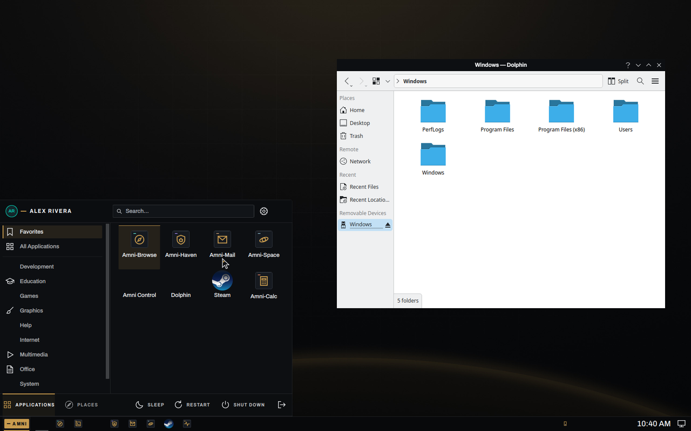
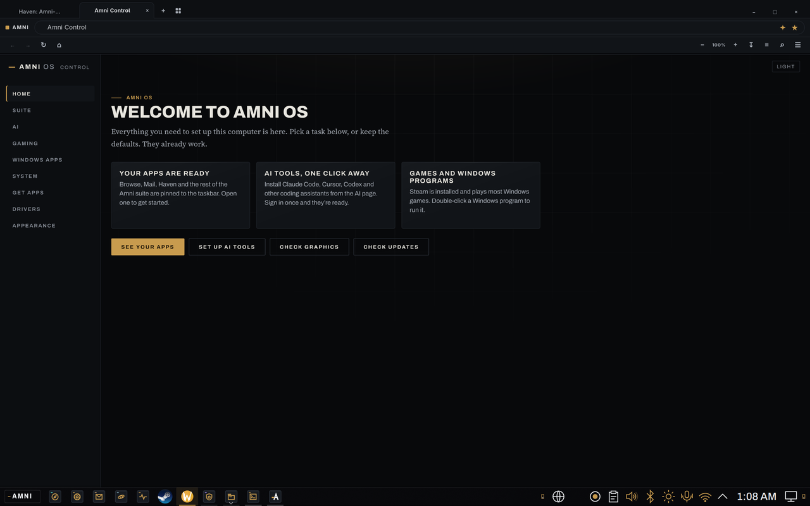
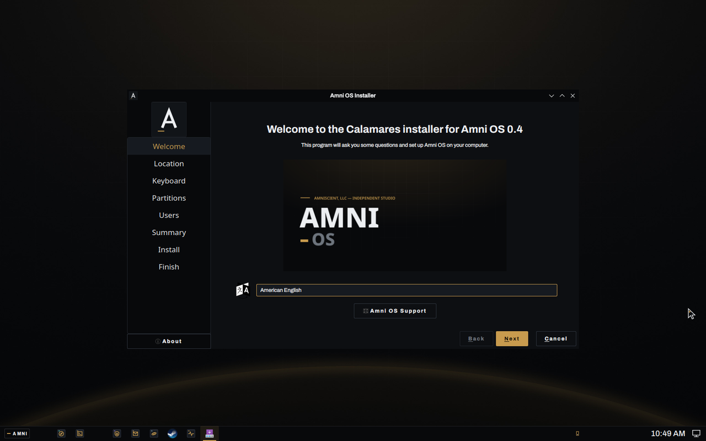

Bottom bar, Start menu, double-click to open. Steam with Proton, Wine for the .exe you still need, a local model already running, Amni-Browse as the default browser, and restore points you can boot into. Amni Control is the window that does the terminal work: drivers, updates, printers, Windows apps, Ubuntu and Fedora boxes, AI seats, all buttons.

I built it for the person who has a Windows machine, a Steam library, a printer and a pile of .exe installers, and wants out without learning a shell. The rule behind every package on the image: Plasma ships the settings panel, Amni OS ships the engine behind it.
Bottom bar, Start menu, Files with Desktop, Documents and Downloads, smb:// shares, Print to PDF, .docx that keeps its layout, NTFS and exFAT drives that just mount.
Steam with Proton on the image, ProtonPlus for Proton-GE, Lutris and Bottles for the other stores, GameMode, MangoHud, controller udev rules, CoreCtrl for AMD tuning.
Ollama runs locally out of the box. One button installs the ROCm or CUDA build for your card. Alpaca for chat, and the AI bench installs Grok, Claude Code, Codex, OpenCode and Cursor seats.
The privacy-first browser on the Servo engine is the default handler for http and https. Zero telemetry, ad and tracker blocking on, DuckDuckGo. Firefox rides along as a second browser.
Btrfs snapshots around every package change, and a GRUB entry to boot straight into one. Timeshift covers ext4 roots. A second kernel (LTS) is one menu entry away.
Arch repos through Discover, Flathub, AppImage, and one-click Ubuntu or Fedora boxes for the .deb and .rpm world, with the apps landing in your menu.
The first window you see. Nine panes, every one a button: Welcome, Suite, AI bench, Gaming, Windows apps, System, Get apps, Drivers, Colors. It runs the privileged work through polkit with one password prompt, and opens a Konsole window so you can watch pacman instead of a spinner.

| PARAMETER | DETAILS |
|---|---|
| Base | Arch Linux, rolling, kernel linux and linux-lts |
| Desktop | KDE Plasma 6 (X11 session), Amni Scient look-and-feel, Archivo and Cascadia Code |
| Installer | Calamares, erase-disk or manual partitioning, Btrfs default, os-prober keeps Windows in GRUB |
| Graphics | Mesa (AMD, Intel), NVIDIA open modules (Turing and newer), VirtualBox guest stack, picked at first boot |
| Gaming | Steam, Proton, ProtonPlus, Lutris, Wine Staging, Bottles, GameMode, MangoHud, Gamescope, vkd3d, DXVK via Proton |
| AI | Ollama (CPU on the image, ROCm or CUDA build on request), Alpaca, AI bench seats |
| Browser | Amni-Browse 0.13 (Servo lane), Firefox |
| Other Linuxes | distrobox + podman: Ubuntu 24.04, Fedora 42, Debian 13 boxes |
| Office and media | LibreOffice with the Microsoft fonts, VLC, Elisa, GIMP/Inkscape/Krita one click away |
| Image | 5.9 GB ISO, UEFI and BIOS, live session with the installer on the dock |
| Privacy | No telemetry anywhere on the image. Control never phones home. |
Every ISO comes out of one script on a build VM: it builds Amni-Browse and the other local packages into a local repo, lays the theme and Control into the image, and runs mkarchiso. The same rig boots the result, clicks every dock launcher with a liveness probe, and runs the installer end to end before an image is called good. What each bake taught is written up in the repo's docs/bake-findings-*.md.

The installer wears the same ink and gold as the desktop, erases or resizes, and leaves the live session's user, autologin and repo behind before the first reboot.
The image is 5.9 GB, bigger than this site's host will serve, so the download mirror is the next thing being wired up. The current build is amni-os-2026.09.04c-x86_64.iso, SHA-256 2b1c7f3412aea7c545906e84dab2199dd7a3d8784ad87c8978f5bcbb5e356201. Until the mirror is live, ask for a USB or a link at hello@amni-scient.com.
Write it to a USB stick with Rufus, Ventoy or dd, boot it, click Install Amni OS on the dock. An existing Windows stays in the boot menu.